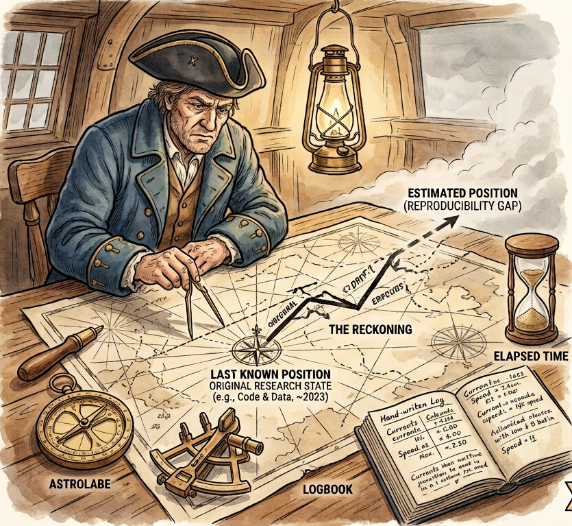
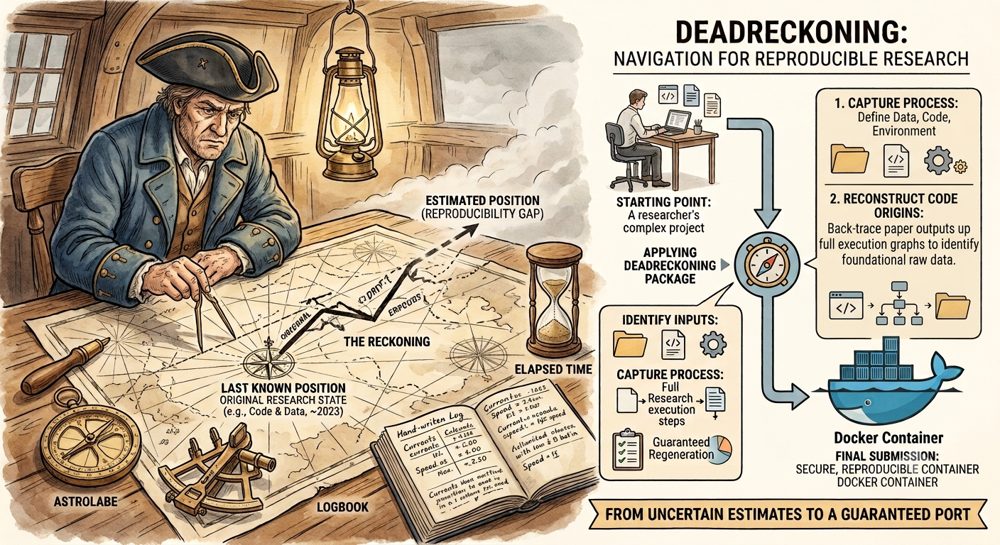
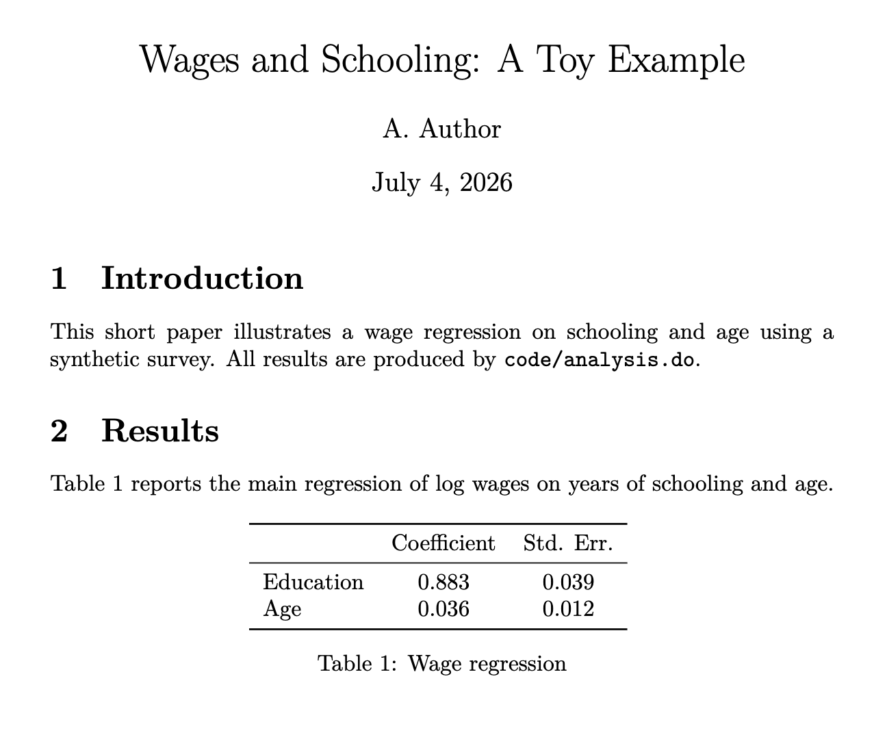

Reproducibility in the Age of LLMs
What Changes, What Doesn’t, and How?
![]()
University of Turin
Collegio Carlo Alberto
Data Editor, Journal of Political Economy
July 6, 2026
Agenda
Three Questions
Will LLMs solve our reproducibility troubles?
Will LLMs help authors prepare replication packages?
Will LLMs help data editors check replication packages?
What Is an LLM — and Why Does It Matter Here?
Hey, Claude: What is an LLM?
A large language model (LLM) is an AI system trained on vast amounts of data to predict and generate language.
| # | LLM/Deep Learning Use | Reproducibility problem? |
|---|---|---|
| 1 | Statistical learning (deep nets, nonparametric ’metrics) | No new problem |
| 2 | Code assistant (LLM writes your code) | No — output is conventional code |
| 3 | LLM in data pipeline (scores, classifies, generates data) | Yes — LLM output enters the data chain |
Q1: Will LLMs Solve Reproducibility?
The dream vs. reality
Dream: Supply a replication package URL, get a coffee, agent reports back.
Reality: Depends on the package. Three cases.
Different Use Case!
Ours is a different use case from Elliott’s!
Q1 (cont.): Which Package?
Where does an agent actually help?
Complete (containerized?) package Agent can run it. But so can a shell script.
Package has gaps (missing deps, broken paths, bad README) Agent infers, fixes, iterates. Hours (Weeks?) → minutes. This is where agents can help.
Requires software/data/hardware you don’t have. Agent is irrelevant. No LLM fixes a missing GAUSS license or provides the required GPU.
→ The right question is not “will LLMs solve reproducibility?” → It’s “where in the workflow does an LLM/agent provide most leverage?”
Q2: Will LLMs Help Authors?

- Project starts in 2019
- Cond. Accepted in 2025
- 🤔 - package does not work.
- Panic.
Q2: Will LLMs Help Authors?

Q2: Will LLMs Help Authors?
DeadReckoning (proposed / in development)
https://github.com/floswald/DeadReckoning
Phase 1 — Understand Detect languages · scan live environment · trace every exhibit in latex source back to a script
Phase 2 — Repair Iterative build-test-fix loop on author’s machine · handles R, Stata, Julia, Python, MATLAB. Docker containerization is the last step — fix natively first
Key: No lockfile ≠ information is gone Reconstructs history from file timestamps, code parsing, installed packages
DeadReckoning Demo
Conditionally Accepted Paper

Replication Package
.
├── code
│ └── analysis.do
├── data
│ ├── region_boost.csv
│ └── survey.csv
├── paper.pdf
├── paper.tex
├── README.md
└── tables
└── table1.tex
DeadReckoning Demo
Package README
# Replication package: Wages and Schooling (toy example)
## Data
- `data/survey.csv` — synthetic survey of wages, schooling, and age (n=200)
## Code
- `code/analysis.do` — runs the regression, produces `tables/table1.tex`
## Requirements
- R (tidyverse)
## To reproduce
Run `code/analysis.do` from the project root.DeadReckoning Demo
DeadReckoning Demo
Q3: Will LLMs Help Data Editors?
Something like DeadReckoning works also for Data Editors. Builds full data map and finds gaps. Helpful first pass for Replicators.
Big(ger?) issue: Computational Environment
Andrews & Shapiro (ES, Jan 2026) VM + keylogging · LLM diffs terminal log vs README · flags undocumented steps. That machine needs to be able to run all the jobs.
SIVACOR (Vilhuber/Cornell, running for AEA) Author submits ZIP → curated Docker image → automated execution → signed TRO Editor verifies without re-running
Nuvolos Cloud based computing environment with snapshotting and BYOL
Back to LLMs: The Integrity Gap
With conventional code: read it, run it, diff outputs. Accountability intact.
With an LLM pipeline, we cannot detect:
- Prompt tuning toward a desired result
- Cherry-picking across stochastic runs (run 20 times, keep the best)
- Outright output fabrication
We can verify that a pipeline was applied. We cannot verify how honestly it was applied.
What We Can Ask For
Minimum disclosure standard for LLM pipelines
- Full prompt (mandatory)
- Raw output exactly as received (mandatory)
- Model name · version · temperature · sampling parameters (mandatory)
- Open-weight model → archived weights or stable link
- Closed API → state limitation explicitly in paper
Treat LLM output as raw data. Archive it with a DOI. Describe the model as you would any instrument.
Summary
| Question | Answer |
|---|---|
| LLMs solve reproducibility? | No — Computational Env 1st order |
| Help authors? | Yes — Case 2 automation is real (DeadReckoning) |
| Help editors? | Yes — log-diffing, README checking (SIVACOR, A&S) |
| LLM-as-data? | Same principle · harder enforcement |
Backup Slides
The Coordination Temptation
“If everyone used Python/R/Julia…”
Right: provisionability improves. Mandate the outcome (must run in clean container), not the tool. Already what SIVACOR does.
Wrong: open-source ≠ reproducible. - Only 31% of econ packages have a controller script — not a language problem - Dependency rot, unset seeds, FP nondeterminism survive any language mandate - Stata scores Yes/Yes/Yes on reproducibility-in-principle — more reproducible than a closed LLM API
Can’t legally redistribute Stata in a public Docker image anyway. Containerization moves the licensing problem; doesn’t dissolve it.
Same Principle, New Problem
The break is on row 3
| Tool | Deterministic? | Archivable? | Re-runnable? |
|---|---|---|---|
| GAUSS / Stata / R | Yes | Yes | Yes |
| Open-weight LLM (Llama, Mistral) | Yes (seed+temp) | Yes (weights) | Yes, with effort |
| Closed API (GPT-4, Claude) | No | No | No guarantee |
gpt-4o today ≠ gpt-4o six months ago. Model-name-plus-version is insufficient.
Three-Layer Archive Taxonomy
| Layer | What it is | Archive strategy |
|---|---|---|
| Pre-trained LLM | Base model weights | HuggingFace if open; name+date if closed |
| Fine-tuned LLM | Your weights | Privacy constraints may apply |
| Analysis output | What the LLM returned | Always — DOI in replication package |
Most economists use layer 3. Hardest to reproduce. Easiest to archive.
Handling Stochastic Variability
Vilhuber’s recommendation
Run queries 10+ times · capture output distribution Apply multiple imputation (Rubin/Reiter rules) Report LLM-induced variance separately from sampling variance
Right standard for results hinging on LLM classification or scoring.
“Hopefully quite close” is not a reproducibility standard.